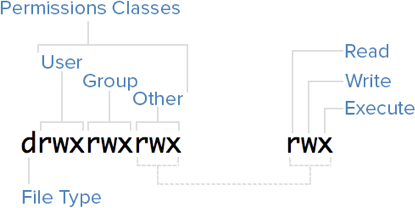

public: True class: center, middle # 多用户与访问控制 蒋炎岩 <jyy@nju.edu.cn> 南京大学计算机软件研究所 --- # 本讲概述 > 操作系统API用于访问操作系统中的.对象 > > * 但并不是任何一个进程都能随意访问任何一个对象 (虽然labs是这样的) > * 必须提供机制和策略限制进程访问对象 ---- * 多用户 * 访问控制 --- class: center, middle # 多用户 --- # 用户？ > 我的电脑/手机就是我一个人用的，我就是唯一的老大，关用户什么事？ ---- ``` $ dd if=/dev/zero of=/dev/sda bs=1MiB dd: failed to open '/dev/sda': Permission denied ``` * 用户最初用于隔离同一个计算机用户/系统管理员之间的(隐私)数据 * 现在还被用于访问控制/数据的隔离 --- # 用户和组的表示 用一个.red[编号]来表示用户；`/etc/passwd`: ``` root:x:0:0:root:/root:/bin/bash ... nobody:x:65534:65534:nobody:/nonexistent:/usr/sbin/nologin lxd:x:105:65534::/var/lib/lxd/:/bin/false jyy:x:1000:1000:Yanyan Jiang:/home/jyy:/bin/zsh ``` ---- User name : password : UID : GID : user info : home directory : shell * 早期UNIX明文存储密码 * 加密的密码存储在`/etc/shadow` --- # 进程与用户 进程有uid/gid，子进程继承父进程的uid/gid * 在操作系统里的表示是euid/egid (effective uid/gid) * 每个进程就有了一个.red[身份]的表示，操作系统会验证.red[所有系统调用]是否符合.red[访问控制策略] ---- ``` $ echo hello > a.txt $ ./a.txt # -rw-rw-r-- bash: ./a.txt: Permission denied $ sudo su # ./a.txt # -rw-rw-r-- bash: ./a.txt: Permission denied $ chmod +x ./a.txt $ ./a.txt # -rwxrwxr-x ./a.txt: line 1: hello: command not found ``` --- # sudo和su > sudo不是super user do! su - substitute user identity sudo - execute a command as another user * 提示输入密码 * 按下回车键以后就神奇地完成了用户切换！ * `sudo su`又是什么东西？ --- # 实现sudo sudo可以用.red[VFS]实现! * 一个特殊的文件/设备“`/dev/auth`” * 任何进程都可以打开这个文件 * 写入用户名和密码 * 设备驱动：检查用户名密码是否匹配 * 如果匹配，设置`current->uid`后返回(用户切换) --- # [Pluggable Authentication Modules](http://pubs.opengroup.org/onlinepubs/8329799/chap4.htm) 库函数和操作系统内模块 (约等于一个设备文件) ```c int pam_authenticate(pam_handle_t *pamh, int flags); ``` strace的结果： * 密码是进程用read系统调用得到的(一系列`ioctl`关闭回显；然后调用`read(3, ...)`) * pipe之后clone，把密码写入管道 * close(2), close(3), … close(1048575) (???) * `execve("/sbin/unix_chkpwd", ...) = 0` --- class: center, middle # 访问控制 --- # 安全 Confidentiality, Availability, Integrity * 别人无法看到我不想让他看到的东西 * 别人无法阻止我做我能做得事 * 别人无法恶意破坏我拥有的东西 访问控制 * 限制用户对操作系统对象的访问 * 原则：只给运行的程序.red[最少]的够用的权限 * 万一应用程序出了问题/有漏洞，也不会危害系统 * .blue[在root下工作是个极坏的习惯] --- # 机制和策略 > Access control policy defined “which data is to be protected from whom”. In simplest form this is > > - a matrix in which rows define users and columns define files or directories (rwx) > > Of course this simple model is unrealistic in filesystems with thousand or millions files and directories. In this case inheritance mechanisms are usually defined to simplify it. --- # 访问控制：机制与策略 Everything is a File * 用户/文件为单位的访问控制 (`ls -l`中大家看到的结果) * 用mode bits表示文件的访问权限 (root有所有访问权限) * 每个文件分别制定访问控制策略 <center></center> 例子：`ls -l /dev` --- # 例子 ``` $ echo hello > a.txt $ chmod 000 a.txt $ ls -l a.txt ---------- 1 jyy jyy 6 May 25 12:47 a.txt $ cat a.txt cat: a.txt: Permission denied $ sudo cat a.txt hello $ chmod a+w a.txt # owner总能改变它文件的权限 # 允许低权限的进程写入 $ cat a.txt cat: a.txt: Permission denied $ echo 'hello' >> a.txt $ sudo cat a.txt $ sudo cat a.txt hello hello ``` --- # 基于用户的访问控制：应用 服务器应用(lp, sshd, httpd, mysql, …) * 实现服务器数据/访问的隔离 * 用户不能(轻易)破坏系统服务 * bug/漏洞也不会影响系统 ---- 竞赛环境 * 选手在Linux中，允许登录某个用户 * 用户无法更改系统配置、写入系统文件等 * 配置网络环境 * 只能访问指定IP和端口；drop所有对外连接…… * 可以在竞赛时实现比赛公平且全程连网 --- # 实现访问控制 原则上很简单：在每次访问操作系统对象时检查 ---- 但.red[安全是最棘手的问题之一] * 用户总是低估安全问题带来的影响：`adduser`创建的home目录的默认权限是`drwxr-xr-x` * 没配置好，这不就是让人偷窥么…… * 访问控制里的bugs * 嘿！这是.red[安全漏洞] --- # TOCTTOU 并发问题：“Time of Check To Time of Use” ([Fast'05 paper](https://www.usenix.org/legacy/event/fast05/tech/full_papers/wei/wei.pdf)) ```c // I'm a server running under root (e.g., sendmail) if (access("file", W_OK) != 0) { exit(1); } // Another process // symlink("/etc/passwd", "file"); // checked fd = open("file", O_WRONLY); write(fd, ...); ``` --- # 在操作系统层实现事务 [Operating System Transactions (TxOS), SOSP'09 paper](http://www.sigops.org/s/conferences/sosp/2009/papers/porter-sosp09.pdf)，提供APIs: ```c sys_xbegin(); ... // appears to be atomic sys_xend(); ``` * “software upgrade remains a dangerous activity” * 我的Surface Go在安装5月更新后成砖了 * 避免TOCTTOU --- class: center, middle # 实际中的例(神)子(坑) --- # 如何获得权限 ``` $ echo hello > /etc/a.txt bash: /etc/a.txt: Permission denied $ sudo !! sudo echo hello > /etc/a.txt bash: /etc/a.txt: Permission denied ``` ---- 老老实实`sudo su`吧 --- # 修改密码 `/etc/shadow`存储了密码的hash * 一般用户连读的权限都没有 ```text $ ls -l /etc/shadow -rw-r----- 1 root shadow 1235 Feb 17 11:36 /etc/shadow ``` 但`passwd`命令却可以修改当前用户的密码 * 修改完成后，的确hash值变了，但我们并没有`sudo passwd` * 为什么？ -- count: false ---- ``` $ ls -l $(which passwd) $(which unix_chkpwd) -rwxr-sr-x 1 root shadow 34816 Feb 27 14:26 /sbin/unix_chkpwd -rwsr-xr-x 1 root root 59640 Mar 22 19:05 /usr/bin/passwd ``` 拥有读、执行、setuid的权限 (运行时获得文件创建者的权限) * setuid行为相当复杂，推荐阅读：[setuid demystified](http://www.usenix.org/events/sec02/full_papers/chen/chen.pdf) (USENIX Security'02)。 # 访问控制 总有一天，现实中会有这样的需求：在.red[两个用户之间共享文件，但其他人无法共享] - 只好再创建一个用户组了 ------ 给操作系统API打补丁 (POSIX ACL: Access Control List, man 5 acl) - 但这让操作系统的行为变得复杂 - ACL是一种metadata，但长度不确定 - 所有文件系统实现都要改了 - 如果我忽然让你在OSLab3里实现…… - 杀死一个程序员只要改三次需求就行了 --- # Access Control List (ACL) 没想到吧，今天的操作系统里还有那么多从来没听说过的角落…… ``` $ setfacl -m "u:jyy:rwx" a.txt $ getfacl a.txt # file: a.txt # owner: jyy # group: jyy user::rw- user:jyy:rwx group::rw- mask::rwx other::r-- $ strace getfacl a.txt ... getxattr("a.txt", "system.posix_acl_access, ...) ``` ------ #